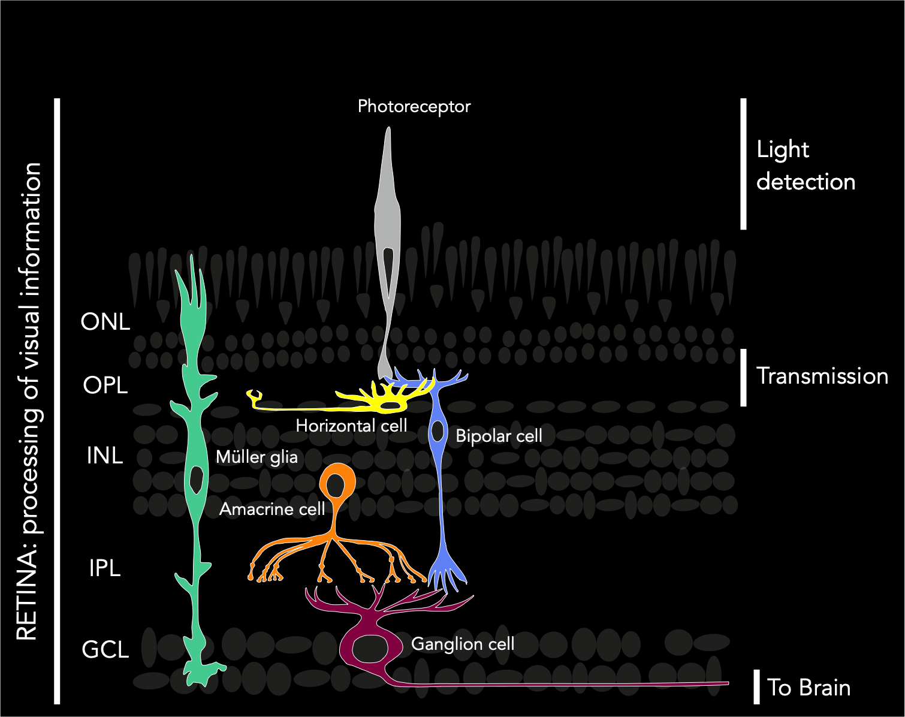
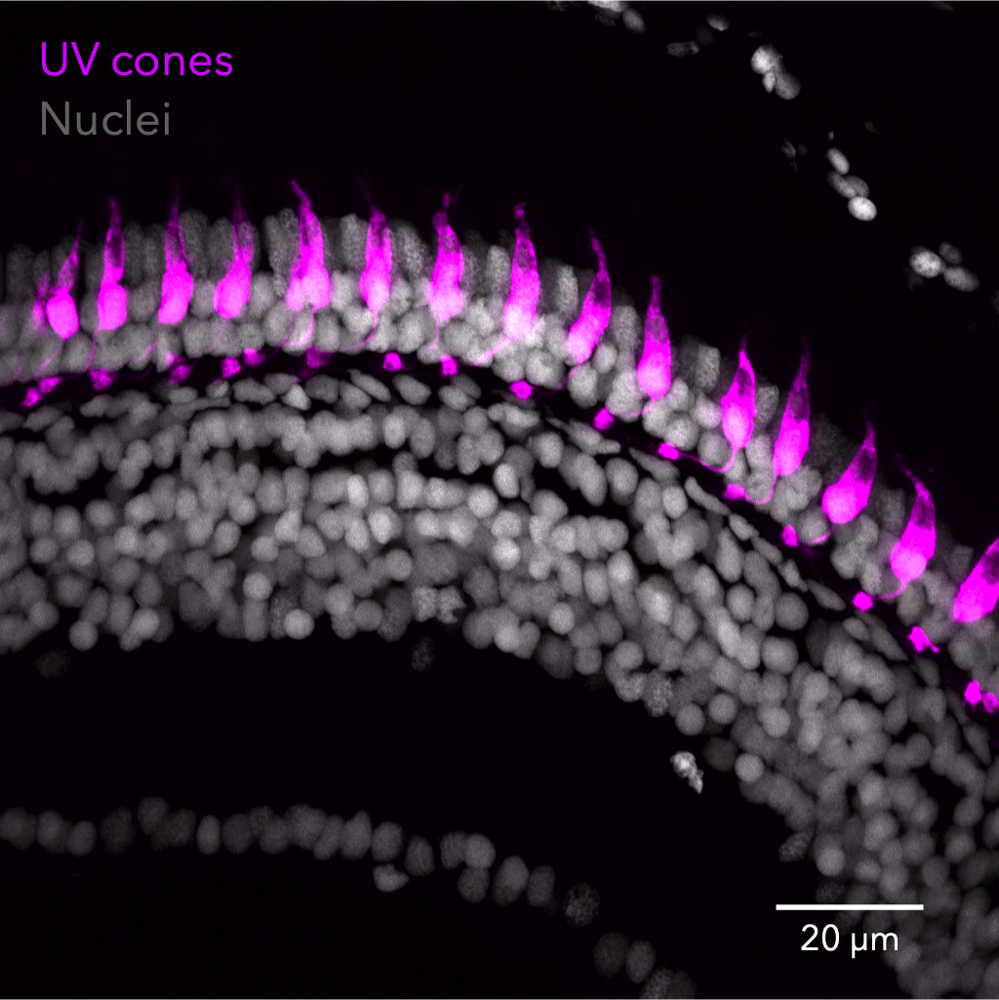
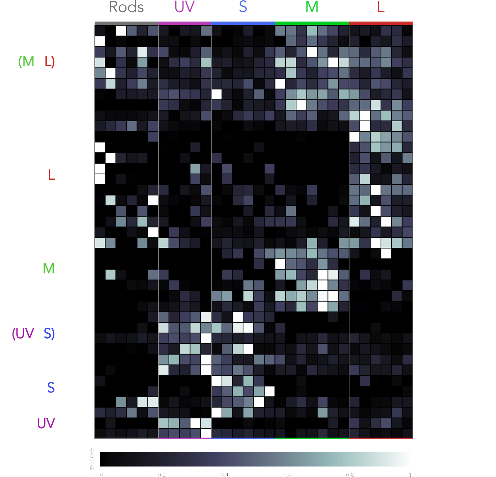
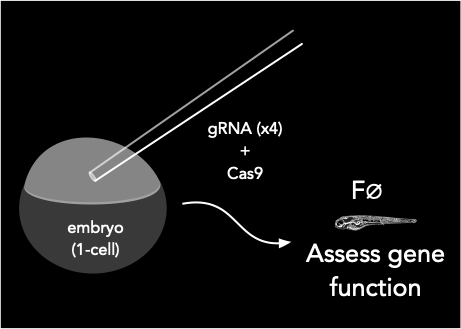
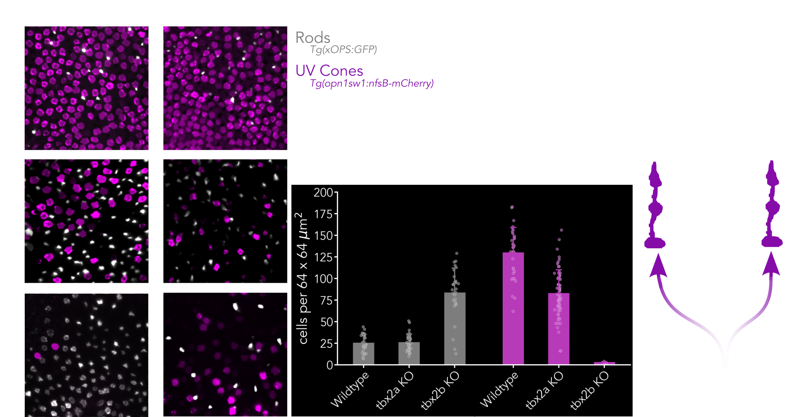
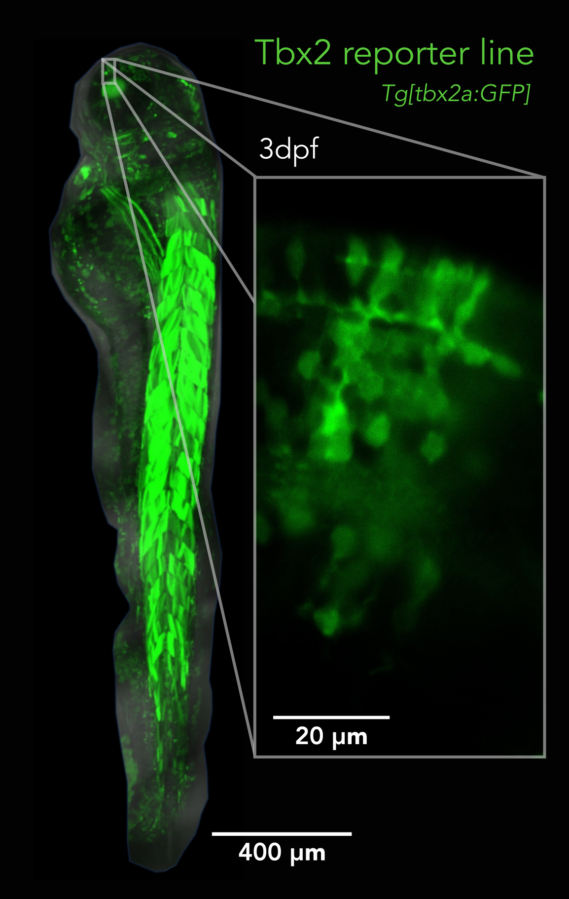

Identification of genes involved in the generation of retinal cell subtypes
new gif needed
Juan Angueyra
Visual System Development

Identification of genes involved in the generation of retinal cell subtypes
Juan Angueyra
Visual System Development
Our group's research focus
- Methods and tools
- Postdoc at NIH
- Collaboration between Katie Kindt's Lab (NIDCD) and Wei Li's Lab (NEI)
- Photoreceptors
- Recent findings and new tools: tbx2 (Carinna Householder)
- Horizontal cells
- Plasticity vs. Predetermination (Meghan Hnilo & Leah Kwak)
Retinal neurons belong to only 5 major classes...


We study two fundamental processes in retinal development:
- → Make the parts...
- How are retinal neurons generated?
- → ...and put them together
- How are retinal neurons wired into specific circuits?
...but there is a rich diversity of subtypes whithin each class
A reliable map of transcription-factor expression in photoreceptors
Generation of cell subtypes relies on transcriptional regulation
- Manual cell-picking using reporter lines (with Vincent Kunze)
- RNAseq of adult photoreceptors
- ~150 differentially-expressed transcription factors
~85% have no known function in photoreceptors
Angueyra et al., eLife (2023)
A reliable map of transcription-factor expression in photoreceptors
Generation of cell subtypes relies on transcriptional regulation
- Manual cell-picking using reporter lines (with Vincent Kunze)
- RNAseq of adult photoreceptors
- ~150 differentially-expressed transcription factors
~85% have no known function in photoreceptors
Angueyra et al., eLife (2023)

F0-screening as an efficient tool to test TF function
F0 screen (CRISPR/Cas9)
- CRISPR mutations → loss of function → phenotype
- Phenotypes can be assessed at high throughput
- F0 larvae are genetic mosaics
- → Guides with high efficiency
- → Use of multiple guides
- → Post-hoc genotyping
Hoshijima et al. (2019), Rihel et al. (2021)

F0-screening as an efficient tool to test TF function: positive hits
with Laura Patak
Xie et al. (2019), Ogawa et al. (2021), Alvarez-Delfin et al. (2009),
F0-screening as an efficient tool to test TF function: negative hits
with Laura Patak
Did we catch them all?
Two UV-cone sub-subtypes? (Carinna Householder)

New tools to study Tbx2 (Carinna Householder)

New tools to study Tbx2 (Carinna Householder)
How are horizontal-cell subtypes generated during development?
How are horizontal-cell subtypes generated during development?
Mutations in lhx1a impair the generation of H1-horizontal cells
Meghan Hnilo and Leah Kwak
Poché et al. (2007)
Mutations in lhx1a impair the generation of H1-horizontal cells
Meghan Hnilo and Leah Kwak
Poché et al. (2007)
Subtype generation: Predetermined OR Plastic?
lhx1a mutations do NOT modify the generation of photoreceptor subtypes
Meghan Hnilo and Leah Kwak
How does connectivity change?
What are the consequences for visual behaviour?
Identification of genes involved in the generation of retinal cell subtypes
Carinna Householder, Meghan Hnilo, Leah Kwak, Juan Angueyra
Visual System Development
We study two fundamental processes in retinal development:
- → Make the parts...
- How are retinal neurons generated?
- UV cones require Tbx2b and Tbx2a*
- S cones require Foxq2
- Rods require Nr2e3
- L cones require Thrb
- H1 horizontals require Lhx1a
- H2/H3 horizontals require Isl1?
- Generation of subtypes is independent of connectivity
- → ...and put them together
- How are retinal neurons wired into specific circuits?
- Subtype specificity & Availability